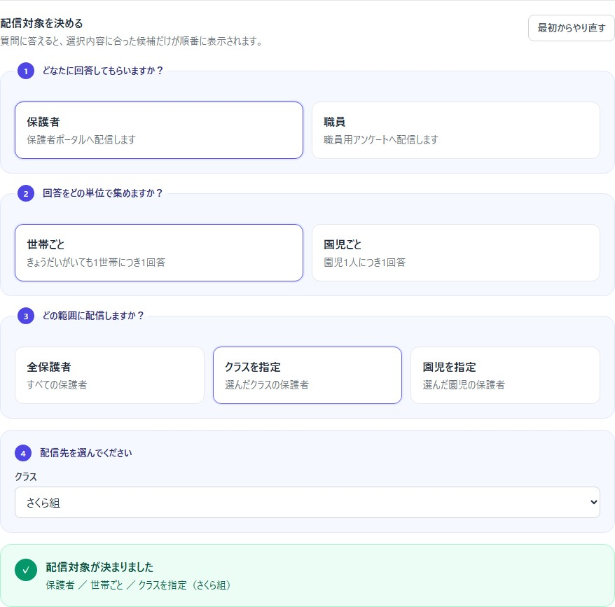
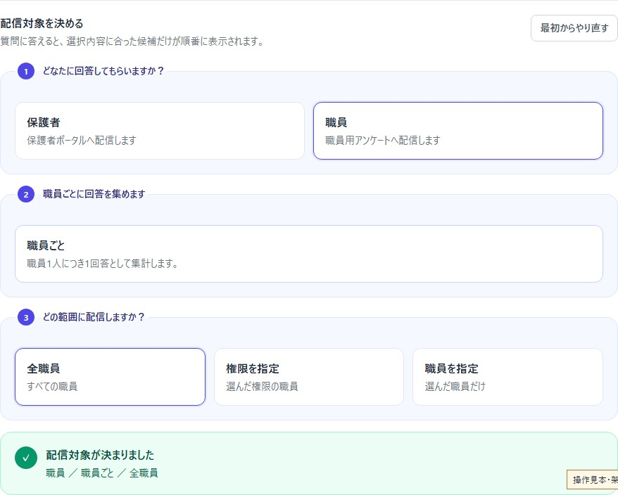
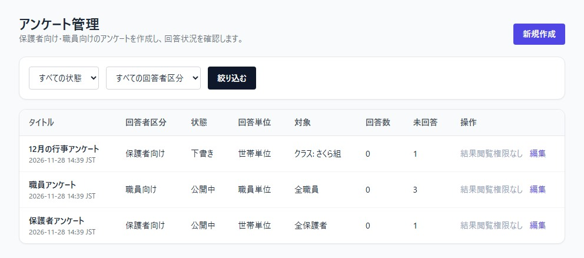
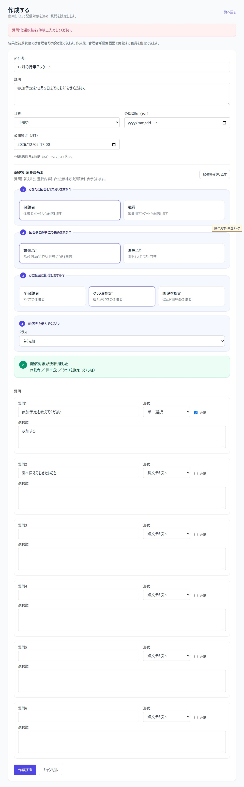

お知らせ・アンケート／作成・管理する職員向け
アンケートを作成する
回答してもらう相手・回答単位・質問を先に決めます。作成後に変更できない項目があるため、保存する前の確認が大切です。
職員画面のメニュー →「アンケート管理」→「新規作成」
1タイトル・説明・状態・期間を入力する
タイトルを入れ、説明には目的や回答期限を書きます。状態はまず「下書き」を選び、必要に応じて公開開始・終了を日本時間で指定します。公開中の状態で作成すると、期間内ならそのまま回答できるようになります。
入力画面を省略せずに見る


2回答してもらう相手と、回答単位を選ぶ
配信対象の案内に沿って「保護者」または「職員」を選びます。保護者なら「世帯ごと」（家庭につき1回答）か「園児ごと」かを決め、全保護者・クラス・園児などの範囲を選びます。クラスや園児を指定するときは具体的な名前も選びます。




職員向けは職員ごとの回答です。全職員のほか、権限や個別の職員を選ぶ方法があります。最後の配信内容のまとめで、相手・単位・範囲を見直します。「最初からやり直す」は、この配信対象の選択をやり直す操作です。
3質問と回答形式・必須設定を決める
質問は1つ以上、最大6つです。使う枠に質問文を入れ、形式と必須の有無を選びます。使わない枠は質問文を空欄にします。単一選択・複数選択の選択肢は、1行に1つずつ、2つ以上入力します。
| 形式 | 使い方 |
|---|---|
| 短文テキスト／長文テキスト | 短い記入欄／詳しい意見を入れる欄。 |
| 単一選択／複数選択 | 選択肢から1つ／複数を選ぶ。 |
| 評価スケール | 1〜5で回答する。 |
| はい／いいえ | どちらかを選ぶ。 |
| 日付 | 日付を入力する。 |
6枠すべての質問欄を見る

4作成して、一覧で保存結果を確かめる
質問・対象・単位を見直し、「作成する」を押します。一覧に戻ったらタイトル・状態・回答単位・配信対象を確認します。下書きなら、まだ対象者は回答できません。

入力を中止するときは、保存前に「キャンセル」や一覧へ戻る操作を使います。入力途中の内容は自動保存されません。保存済みのアンケートを、画面から戻るだけで取り消すことはできません。
5入力エラーを直す・作成後の確認へ進む
画面上部にエラーが出た場合は、説明に従って入力を直します。例えば単一選択の選択肢が1つだけだと作成できません。エラーが解消して一覧へ戻ったことを確認してください。

作成後の編集画面では、タイトル・説明・状態・終了日時を変更できます。開始日時を変更できるのは回答が入る前です。配信対象や質問を直す必要がある場合は、新しく作り直します。